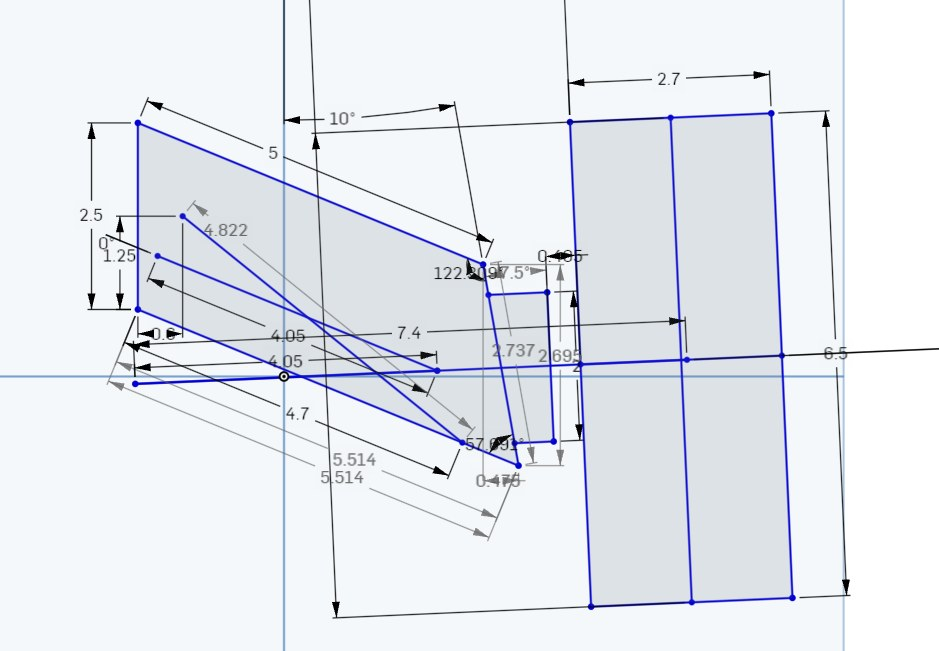
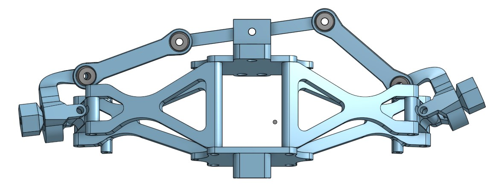
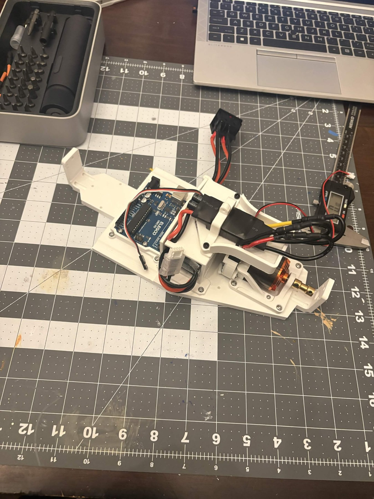
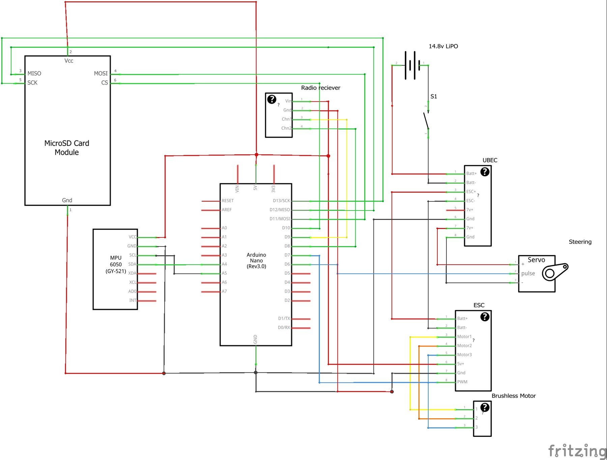
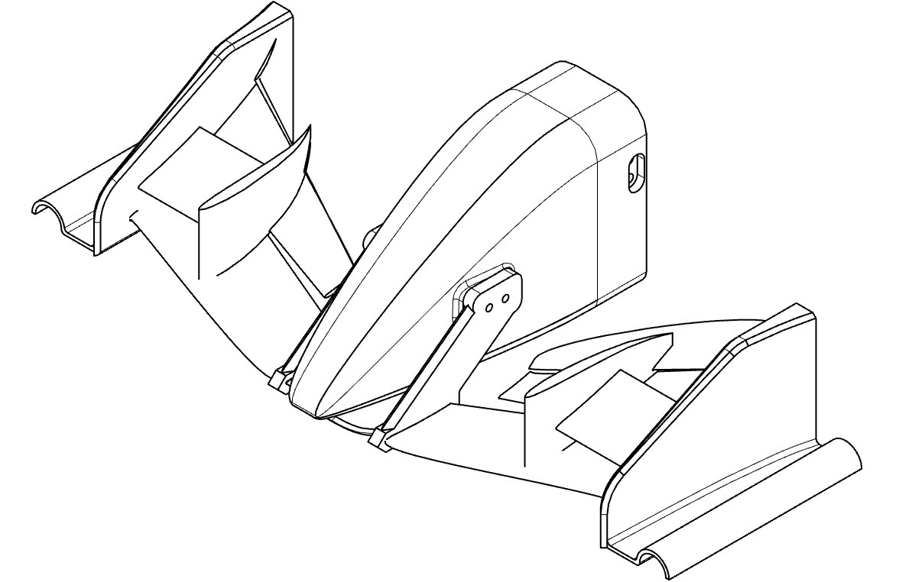
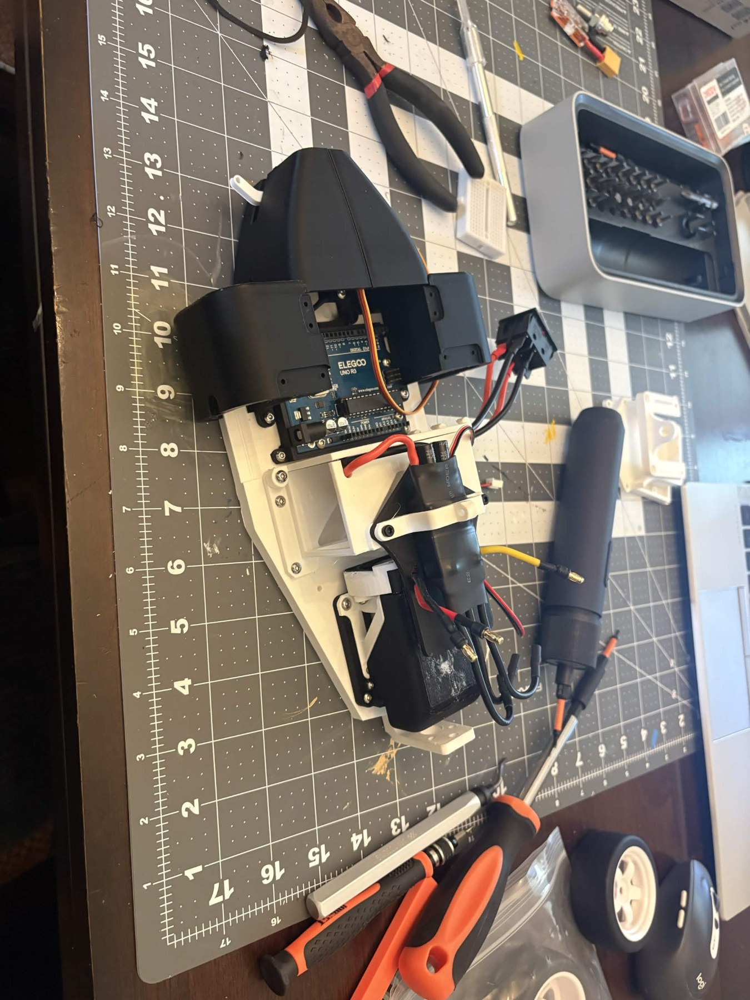

PSR9000
Interactive PSR9000 model
Loading PSR9000…
PSR9000 is a rear wheel drive, formula style RC car that was developed and built in the summer after senior year of high school out of boredom. Over the course of about 3 months, we designed, built and iterated the car. The car reached about 30 mph in testing, demonstrating our ability to design, build and test, but left several shortcomings that will be addressed in the future.
Suspension
We started with the suspension geometry, then designed the chassis around it. The double wishbones use printed PLA control arms and ball joints, with metal pins at the chassis. Caster and kingpin inclination helped the wheels self-center despite play in the joints. The thin knuckles were the main failure point during impacts. We also had to replace the shock springs: the car weighed less than expected, so the original springs held it above the intended ride height.


Drivetrain
A DYS D3542 brushless motor drives the rear wheels through a differential and CV axles. A 14.8 V LiPo battery supplies power through a FlyColor 50 A speed controller. The drivetrain worked reliably compared with the rest of the car, though the motor coupler needed repeated replacement after its screws stripped. Our choice of a drone speed controller also meant we had no regenerative braking. Ground testing reached about 30 mph.

Electronics
The Arduino Nano handles radio inputs, throttle, steering, and data logging. An MPU6050 measures acceleration and orientation, while a microSD module stores those readings with the control inputs. We moved from an Uno prototype to the smaller Nano and soldered the final circuit on perfboard. Wheel-speed sensing worked on the breadboard but failed in the installed circuit. Without reliable wheel-speed data, we could not complete the planned traction control.

Aerodynamics
The aerodynamic parts had to fit an existing chassis, which restricted the floor geometry. We designed two Venturi tunnels, a rear diffuser, and wings intended to generate downforce and manage airflow around the exposed wheels. Printing constraints limited the shapes we could produce. We did not validate the design with CFD, and the front wing broke during testing, so the project did not establish how much downforce these parts produced.

Fabrication
Most custom parts were printed in PLA. Flat print surfaces and limited overhangs made fabrication practical, but also constrained the design. Brass inserts improved the durability of threaded connections. Six long M4 bolts reinforced the chassis at the cost of difficult disassembly, while tight wiring clearance made the perfboard circuit hard to service. For another version, we would design around standard fasteners and combine the electronics on one PCB.

please? it has all the details